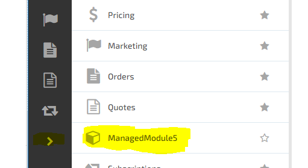

Creating a Virto Commerce Module
This project enables developers to create a module for Virto Commerce. The solution contains a web project that can be installed on Virto Commerce administration platform.
Run
- Compile the solution.
- Configure platform in accordance to the guide available here.
-
Run the following command as administrator from the Commerce Manager "~/Modules" directory:
mklink /d CustomerReviews.Web {solution-path}/CustomerReviews.Web - Open Commerce Manager and you should see your module under ">" as in screenshot below.

Debug
To debug your new module, click debug->attach to the process and select w3wp.exe process (if you don't see it, try opening VC platform in the browser and select "show all processes").
Virto Commerce Resources
- Developer documentation
Detailed documentation and API reference material for building extensions. - Extension samples on GitHub
Use a sample project to kickstart your development. - Extensibility chat room on Gitter
Meet other extension developers and exchange tips and tricks for extension development. - API Reference
Explore Virto Commerce API.